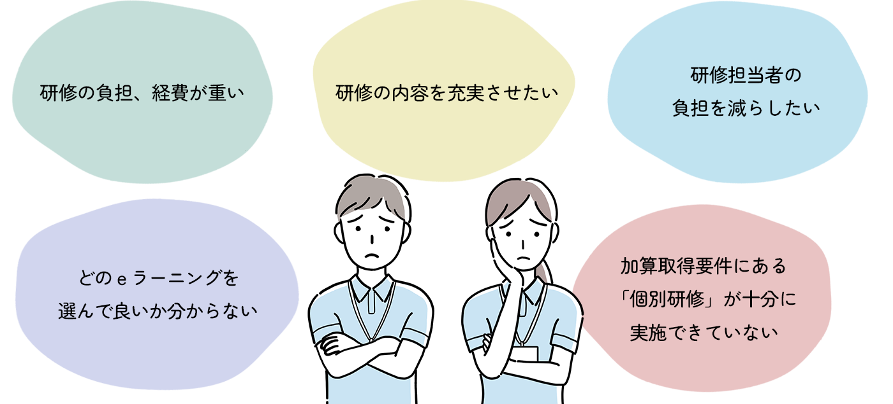
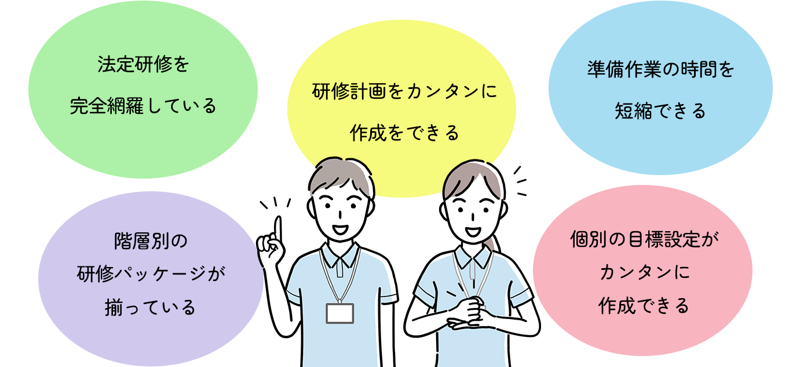
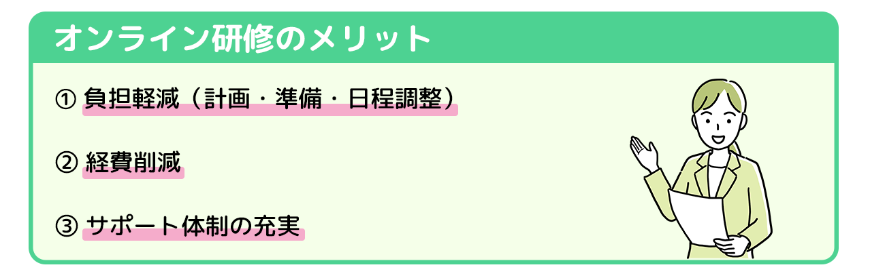

研修の企画・実施で、こんなお悩みを抱えたままでいませんか？

これらのお悩みを解決するため、
オンライン動画研修サービスの導入が進んでいます!!
オンライン研修サービスを選ぶポイントは？


事業所導入実績業界1位のお茶の水ケアサービス学院が
ご事業所の研修計画から実施、管理までをまとめてサポート!!
導入実績業界1位の秘密が、約1時間のオンライン説明会で明らかに!!
（画面をオフにして、お仕事をしながらのご視聴でもOKです）
✓研修の成果が最大限に活きる
✓法定研修を完全網羅
✓現場経験豊富な専門性の高い講師陣
・専門性の高い専門研修動画は、委員会活動にも役立ちます
・15分研修や30分研修は、時間を効率的に使いたい方に最適なコンテンツです
・気に入った講師への来訪依頼や、Zoomでの事業所内研修の依頼も可能です。（有料メニュー）
✓充実したカスタマーサポート
・研修ご担当者様のお悩み解決に、介護現場経験・研修実施経験のある職員がサポートします
✓1年間見放題の定額プラン
・職員お一人おひとりにIDを発行しないため、追加料金は一切かかりません
・毎月、研修動画が追加されます
・動画配信以外にも、Zoomによるオンラインセミナーを開催。（無料・人数制限なし）
✓誰でも簡単に使えるシンプルな操作性
✓テキストやテスト、受講証明書・受講報告書を完備
✓充実のラインナップ
・コンテンツ数1,000以上、総再生時間700時間以上の豊富なラインナップを揃えています
✓受講管理システムも追加可能
・助成金などの申請要件にも対応できます